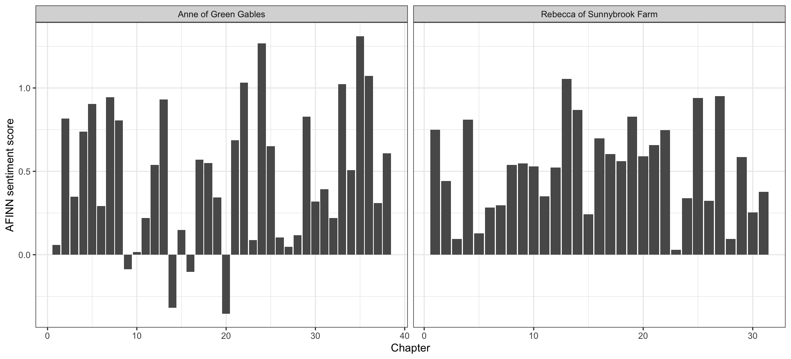
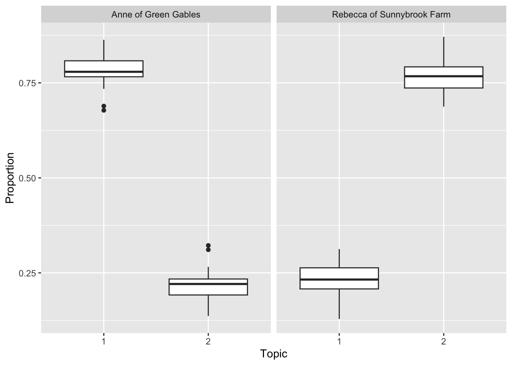
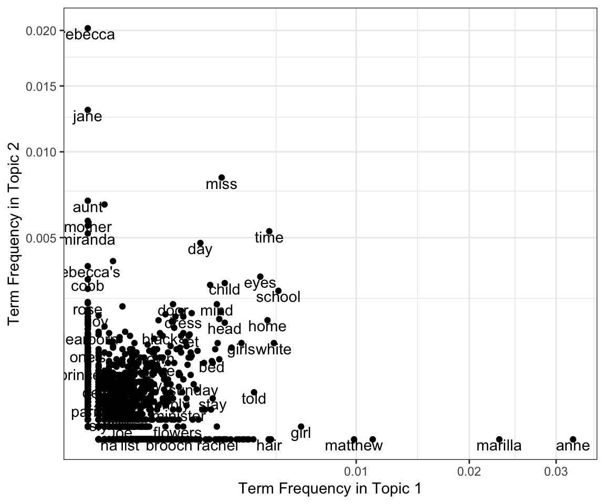

library( dplyr )
library( ggplot2 )
library( tidytext )
library( stringr )
library( tidyr )
library( topicmodels )MA22019 2025 - Solutions for Computer Lab 6
Mise en place
Lab
Solutions
You may want to load the following packages before starting the exercise:
When working on a University PC, you have to first install the tidytext package and any dependencies using
install.packages( "tidytext", dependencies = TRUE )For the sentiment analysis you can load the sentiment lexicons using
AFINN <- read.csv("data/AFINN Sentiment Lexicon.csv")
Bing <- read.csv("data/Bing Sentiment Lexicon.csv")Tutorial Question 1 - Comparing books
We are asked to explore and compare the books Anne of Green Gables by L.M. Montgomery and Rebecca of Sunnybrook Farm by Kate Douglas Wiggin. The two books are provided together in the file “Books Tutorial Question 1.csv” and the following information is provided:
text - Text as printed in the book
title - Book the text comes from
chapter - Chapter the text belongs to
Perform the following tasks using the techniques described in Chapter 3 of the lecture notes.
- Extract the two words with the highest term frequency-inverse document frequency for each book, with the corpus only containing Anne of Green Gables and Rebecca of Sunnybrook Farm.
Let’s start by loading the data:
Books_raw <- read.csv( "data/Books Tutorial Question 1.csv" )We first split the text into individual words and remove any underscores, before counting the number of occurrences of each word per book:
Books_count <- Books_raw %>%
unnest_tokens( word, text ) %>%
mutate( word = gsub( "\\_", "", word ) ) %>%
count( title, word )We can now use the bind_tf_idf() function to derive the tf-idf and look for the top 2 for each book:
Books_count %>%
bind_tf_idf( word, title, n ) %>%
group_by( title ) %>%
arrange( desc(tf_idf) ) %>%
slice_head( n=3 )# A tibble: 6 × 6
# Groups: title [2]
title word n tf idf tf_idf
<chr> <chr> <int> <dbl> <dbl> <dbl>
1 Anne of Green Gables anne 1102 0.0107 0.693 0.00740
2 Anne of Green Gables marilla 795 0.00770 0.693 0.00534
3 Anne of Green Gables diana 385 0.00373 0.693 0.00258
4 Rebecca of Sunnybrook Farm rebecca 571 0.00771 0.693 0.00535
5 Rebecca of Sunnybrook Farm rebecca's 105 0.00142 0.693 0.000983
6 Rebecca of Sunnybrook Farm cobb 90 0.00122 0.693 0.000843The output shows that “Anne” and “Marilla” have the highest tf-idf for “Anne of Green Gables”. When looking at “Rebecca of Sunnybrook Farm”, “Rebecca” and “Rebecca’s” should not be considered different words. As such, “Rebecca” and “Cobb” are the two words with the highest tf-idf in that book.
- Use sentiment analysis to explore how the emotional intent has evolved over the two books. How do the two books compare?
To begin with, we require a sentiment lexicon, such as AFINN:
AFINN <- read.csv("data/AFINN Sentiment Lexicon.csv")We want to consider sentiment per chapter. Before calculating the sentiment score, we need to split and clean the text data :
Books <- Books_raw %>%
unnest_tokens( word, text ) %>%
mutate( word = gsub( "_", "", word ) )The next step is to calculate the sentiment for each chapter and book. We can adapt the code from Section 4.2 for this purpose:
Books <- Books %>%
inner_join( AFINN, by="word" ) %>%
group_by( title, chapter ) %>%
summarise( sentiment = mean(value) )Finally, we visualize the sentiment per chapter for each book:
ggplot( Books, aes( x=chapter, y=sentiment ) ) +
facet_wrap( ~title, scales = "free_x" ) + geom_col() + theme_bw() +
labs( x="Chapter", y="AFINN sentiment score" )
We find that both books used generally a positive sentiment in terms of the AFINN sentiment lexicon. Looking at the individual plots, it’s difficult to identify a clear pattern. For “Anne of Green Gables”, one may argue that the last chapters are slightly more positive than the beginning of the book, but it’s not really conclusive. For “Rebbeca of Sunnybrook Farm”, the plot shows a slight increase in sentiment before the book ending on a slightly less “posiitve” sentiment. Overall, apart from the general “positive” sentiment, there are little obvious similarities in terms of how the emotional intent evolves throughout the books.
- Suppose each book chapter is considered as a separate document (as we did in Section 3.4.3 in the lecture notes). Use Latent Dirichlet Allocation to derive \(K=2\) topics, and then study the estimated proportions provided by the model. What do you conclude?
The data is already in a nice format and we can thus perform the same steps as in the analysis of the two books by Charles Dickens:
We first create the document term matrix
Books_chapters <- Books_raw %>%
unite( col=document, title, chapter ) %>%
unnest_tokens( word, text ) %>%
mutate( word = gsub( "_", "", word ) ) %>%
anti_join( stop_words, by="word" ) %>%
count( document, word, sort = TRUE )
Books_dtm <- Books_chapters %>% cast_dtm( document, word, n )Now we can fit the LDA model:
Books_LDA <- LDA( Books_dtm, k=2, method = "Gibbs", control=list(seed=123) )We start by analyzing the make-up of the individual chapters:
tidy( Books_LDA , matrix = "gamma" ) %>%
separate( document, c("title", "chapter"), sep="_", convert=TRUE ) %>%
ggplot( aes( x=factor(topic), y=gamma ) ) +
facet_wrap( ~title ) + geom_boxplot() +
labs( x="Topic", y="Proportion" )
The results suggest that the fitted model does a good job at identifying which book the indiviudal chapters come from. The proportion of Topic 1 is high for chapters from “Anne of Green Gables”, while Topic 2 features predominately in “Rebecca of Sunnybrook Farm”.
Finally, we look at proportions for the individual words within th two topics:
tidy( Books_LDA , matrix = "beta" ) %>%
mutate( topic = case_when( topic==1 ~ "Topic1", topic==2 ~ "Topic2") ) %>%
pivot_wider( names_from = topic, values_from = beta, values_fill = 0 ) %>%
ggplot( aes(x=Topic1, y=Topic2) ) + geom_point() +
geom_text( aes(label=term), check_overlap = TRUE, vjust=1 ) +
coord_trans( x="sqrt", y="sqrt" ) + theme_bw() +
labs( x="Term Frequency in Topic 1", y="Term Frequency in Topic 2" )Warning: `coord_trans()` was deprecated in ggplot2 4.0.0.
ℹ Please use `coord_transform()` instead.
We find a similar pattern to that in Section 4.4.3. The character names are mostly allocated to one of the two topics, while the majority of words features with a similar frequency in both topics.
- Some scholars claim that Anne of Green Gables is patterned after Rebecca of Sunnybrook Farm. Discuss whether your results in parts a)-c) support this claim or not.
The results in part c) and e) give some support, as the clearest differences are observed for the character names, while the remaining words have a similar frequency and occur in both books. However, the differences in sentiment from part d) make this claim seem less likely. So we may conclude that the books may have some similarities in language, but the stories are significantly different in terms of their sentiment.
Looking at the summaries of the two books, we find that both books desribe young girls and their coming-of-age stories, but that Anne and Rebecca are different in their personalities:
“Anne of Green Gables” is about Anne’s personal growth, her imaginative and often dramatic nature, and the challenges she faces in building relationships, particularly with Marilla and Diana.
“Rebecca of Sunnybrook Farm” focuses on Rebecca who is optimistic, and tends to bring out the best in everyone around her.
Tutorial Question 2 - The function grep()
We so far only used the function grep() when extracting the text data from the files provided by Project Gutenberg. Specifically, we used it to identify the lines containing the word “EBOOK”, signalling the beginning and end of the book. The following exercise will require you to use grep() to identify all lines which contain a specific phrase:
The Police of Utopia sent us data on burglaries which were reported between 2015 and 2021, including a short description providing information on the number of criminals and their victims. Victims are classified into six groups: “young single”, “young couple”, “middle-aged single”, “middle-aged couple”, “elderly single” and “elderly couple”. The data are available in the file “UtopiaCrimes.csv”. Extract the following information using the functions grep():
- For which group of people did the police record the most burglaries?
We start by loading the date:
Crimes <- read.csv("data/UtopiaCrimes.csv")Looking at the data, we see that the description states the group affected by the burglary. So we need for each group to extract the lines of text in which they are mentioned and count the number of occurrences. The function grep() extracts the indices of the lines and length() then counts them:
length( grep( Crimes$Description, pattern = "young single" ) )[1] 2126length( grep( Crimes$Description, pattern = "young couple" ) )[1] 1488length( grep( Crimes$Description, pattern = "middle-aged single" ) )[1] 3043length( grep( Crimes$Description, pattern = "middle-aged couple" ) )[1] 2017length( grep( Crimes$Description, pattern = "elderly single" ) )[1] 4410length( grep( Crimes$Description, pattern = "elderly couple" ) )[1] 3429The results show that the most burglaries were observed for the group “elderly single”.
- What is the proportion of burglaries that involved more than two criminals?
We need to extract the descriptions which state “Three criminals”, and “More than 3 criminals”. This can again be achhieved using grep() and length():
num_3_burglars <- length( grep( Crimes$Description, pattern = "Three Criminals" ) )
num_4_burglars <- length( grep( Crimes$Description, pattern = "More than 3 criminals" ) )Finally, we calculate the proportion:
( num_3_burglars + num_4_burglars ) / nrow( Crimes )[1] 0.2440501We find that 24.4% of burglaries were committed by a group of three or more people.